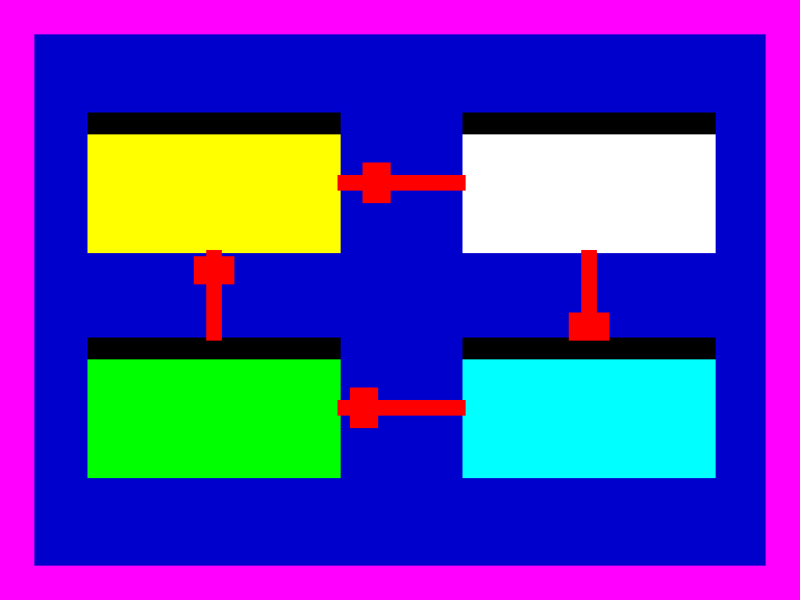

Cómo se hace

Arrastra cada paso hasta dejar las fases en el orden natural en el que se producen.
Ordena las fases del ciclo
Coloca las fases del ciclo del agua en su orden correcto.
- Evaporación: el calor del Sol hace que el agua se evapore.
- Condensación: el vapor sube y se condensa formando nubes.
- Precipitación: el agua vuelve a caer como lluvia o nieve.
- Recogida: el agua se acumula en ríos, lagos y océanos.